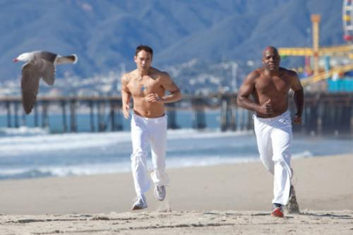

подготовка Дакаскоса
Глупо отрицать, что «Только Сильнейшие» в свое время очень многих привел в капоэйру.
Про сам фильм ничего говорить не буду, это уже давно классика жанра — сейчас он смотрится достаточно забавно и немного наивно))
Но наткнулась тут на видео подготовки Марка Дакаскоса к фильму:
А еще оказалось он не бросил занятий с тех времен. И в свои 47 он все так же тренируется под руководством все того же Joselito «Amen» Santo, который ставил ему капу в фильме.
Несколько прошлогодних фоток
